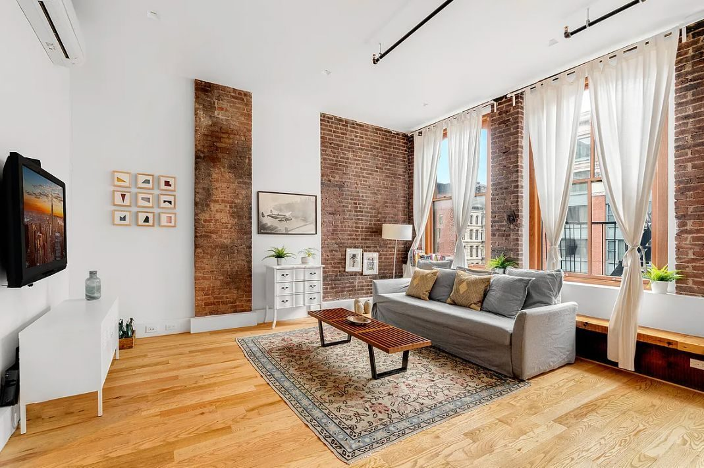

Manhattan · Neighborhood guide
Tribeca Neighborhood Guide
Tribeca is a small Lower Manhattan neighborhood of converted 19th-century warehouses, cobblestone side streets and Hudson River waterfront, and it's one of Manhattan's highest-priced neighborhoods, with a median asking price of $4,695,000 in September 2026 (StreetEasy).
By Glenn Velasco
Licensed Real Estate Salesperson · Compass
Updated

This guide covers where it begins and ends, what kinds of homes you'll find, how to get around, and what the market looks like now. Glenn Velasco is a Licensed Real Estate Salesperson at Compass who has represented Tribeca listings for sale and for rent.
01 / Boundaries
Where is Tribeca?
Tribeca is bounded by Canal Street to the north, Broadway to the east, Chambers Street to the south and West Street along the Hudson River to the west. The name is short for "Triangle Below Canal," although the area is really closer to a trapezoid. The southern edge is the one people argue about. Some listings and maps push Tribeca down to Murray or Vesey Street, so a building on those blocks may be marketed as Tribeca while city sources place it in the Financial District. When an address matters to you, check how the listing defines it.
Tribeca is in Manhattan Community District 1. Its main ZIP codes are 10013 and, on the southern blocks, 10007.
02 / History
A short history: from Washington Market to lofts
For most of the 19th century this was a commercial district. The Washington Market wholesale produce trade spread through the area, and dry goods and textile merchants filled store-and-loft buildings with tall ceilings and big windows. By the 1960s that trade had largely left. In the 1970s artists began living and working in the empty lofts, and the "Tribeca" name was coined in that same decade.
Much of that building stock is protected today. The NYC Landmarks Preservation Commission designated four Tribeca historic districts (West, East, North and South) in 1991 and 1992, and added the Tribeca South Extension in 2002. In practice, exterior changes to many buildings need Landmarks approval, which is worth knowing before you plan a renovation.
03 / Housing
Tribeca housing: lofts, condos and co-ops
Loft conversions
Tribeca's classic home is the converted loft: a former warehouse or factory floor with high ceilings, oversized windows, exposed columns and open plans. Many sit in buildings with only a handful of units, sometimes one per floor. Layouts vary a lot from building to building, so floor plans, light and building rules matter as much as square footage.
New development condos
Alongside the lofts, Tribeca has newer condominium towers and conversions. 56 Leonard Street, designed by Herzog & de Meuron and completed in 2017, is the best-known example, with 145 apartments. Others, like 111 Murray Street, sit on the contested southern edge. New-development purchases follow a different process from resales, with an offering plan, sponsor terms and closing costs that can differ, so read the offering plan with your attorney before you sign.
Co-ops and rentals
Tribeca also has co-op buildings, including some early loft co-ops. Co-ops require board approval and a full financial package, and many limit financing, subletting or pied-à-terre use. Rentals range from units in converted lofts and condos rented by their owners to large rental complexes such as Independence Plaza, which opened in 1975. If you're coming from abroad, condos are usually the simpler route to ownership, because co-op boards often ask for U.S. financial history. Glenn can walk you through the difference in English, Spanish, Italian or French.
04 / Market snapshot
Tribeca market snapshot, September 2026
These figures come from public data sources, each measured differently, so read them as a range rather than a single price:
- Median asking price
- $4,695,000
- StreetEasy Data Dashboard, September 2026. This is the median asking price of listings that month.
- Median asking rent
- $10,000/mo
- StreetEasy Data Dashboard, September 2026
- Median sale price
- $3,773,942
- Over the three months ending September 2026, up 0.6% year over year, per Redfin. Redfin also reports a median of 59 days on market.
Sources: StreetEasy Data Dashboard, September 2026; Redfin Tribeca Housing Market, three months ending September 2026.
Asking prices run above closed prices here, which is common in a high-end market with a wide spread between small lofts and full-floor penthouses. For a building or a specific apartment, Glenn can pull recent comparable sales. If you already own in Tribeca, you can request a free valuation.
05 / Subway lines
Getting around: Tribeca subway lines
Tribeca is served by several subway lines within a short walk:
- Franklin Street (1, plus the 2 late nights), at Varick Street and West Broadway, in the middle of the neighborhood
- Chambers Street (1, 2, 3) at West Broadway, and Chambers Street (A, C) near Church Street, along the southern edge
- Canal Street (1) and Canal Street (A, C, E) along the northern edge
- Canal Street stations for the N, Q, R, W, J, Z and 6 trains, at and just east of Broadway
The World Trade Center area, with PATH trains to New Jersey, is just south. The Holland Tunnel entrance is in the northwest corner of the neighborhood.
06 / Parks and waterfront
Parks and the waterfront
Tribeca's stretch of Hudson River Park runs from Chambers Street to Canal Street. Pier 25 has a playground, a turf field, mini golf and river views. Pier 26, which opened in 2020, has the Science Playground, lawns and a restaurant. The upland strip has a skatepark, a dog run, and basketball and tennis courts. Inland, Washington Market Park on Chambers Street between Greenwich and West Streets has a playground, a community garden and courts. Duane Park, a small triangle at Hudson and Duane Streets, was bought by the city from Trinity Church in 1797 for five dollars. It was the first space the city acquired specifically to be a public park. Bogardus Plaza on Hudson Street, between Chambers and Reade, is a redesigned public plaza with seating and plantings.
07 / Public schools
Public schools
Public schools. P.S. 234 Independence School at 292 Greenwich Street is the zoned public elementary school for much of Tribeca. Its zone runs south of Canal Street, north of Liberty Street, west of Church Street and east of West Street. School zones change, so confirm current zoning and school information for any address with NYC Public Schools' Find a School (opens in a new tab) search.
08 / Recently sold and rented

Recently sold in Tribeca
93 Worth Street, Unit 406
(opens on Compass in a new tab)
Recently rented in Tribeca
293 Church Street, across from the Roxy Hotel
(opens on Compass in a new tab)09 / Buying or renting with Glenn
Buying or renting in Tribeca with Glenn
Buying in Tribeca comes down to understanding the building: its landmark status, whether it's a condo or a co-op and what the board requires, the offering plan if it's new construction, and how a particular loft's layout and light compare with similar ones nearby. Glenn handles that work for buyers, sellers and renters. As part of the M Team at Compass, he specializes in international buyers and investors, condos, co-ops and rentals, and he works in English, Spanish, Italian and French.
Planning a purchase? Start with the Buyer's Guide. Looking to rent? The Renter's Guide covers documents, income requirements and applications. Then contact Glenn at 929.392.3707 or glenn.velasco@compass.com.
10 / FAQ
Tribeca FAQ
What are the boundaries of Tribeca?
Tribeca runs from Canal Street south to Chambers Street, and from Broadway west to the Hudson River at West Street. Some listings extend the southern edge to Murray or Vesey Street.
What does Tribeca stand for?
Tribeca is short for "Triangle Below Canal" (Street). The name dates from the 1970s, even though the neighborhood is shaped more like a trapezoid than a triangle.
What types of homes are in Tribeca?
Mostly converted loft buildings from the 19th and early 20th centuries, plus newer condominium towers such as 56 Leonard Street, along with co-ops and rental buildings. Many loft buildings are inside landmarked historic districts.
How much does an apartment in Tribeca cost?
In September 2026, StreetEasy's median asking price in Tribeca was $4,695,000 and the median asking rent was $10,000 a month. Redfin reported a median sale price of $3,773,942 for the three months ending September 2026. Prices vary widely by building and size.
Which subway lines serve Tribeca?
The 1 stops at Franklin Street, Canal Street and Chambers Street. The 2 and 3 stop at Chambers Street, the A and C at Chambers Street and Canal Street, and the E at Canal Street. The N, Q, R, W, J, Z and 6 stop at Canal Street stations at and just east of Broadway.
Can Glenn Velasco help me buy or rent in Tribeca in Spanish, Italian or French?
Yes. Glenn Velasco is a Licensed Real Estate Salesperson at Compass who works with buyers, sellers and renters in English, Spanish, Italian and French, including international buyers. Reach him at 929.392.3707 or glenn.velasco@compass.com.
11 / Sources
Sources
Sources, each checked October 28, 2026: Wikipedia, Tribeca (opens in a new tab); Curbed NY, Tribeca borders (2014) (opens in a new tab); New York Times, "THING; TriBeCa" (1993) (opens in a new tab); Eater NY, Tribeca (opens in a new tab); NYC Landmarks Preservation Commission, Tribeca historic district maps (opens in a new tab); NYPAP, Tribeca Historic Districts (opens in a new tab); StreetEasy Data Dashboard, September 2026 (opens in a new tab); Redfin, Tribeca Housing Market (opens in a new tab); Wikipedia, Franklin Street station (opens in a new tab); Wikipedia, Chambers Street station (opens in a new tab); 92NY Tribeca, Getting here (opens in a new tab); Hudson River Park, Tribeca (opens in a new tab); Hudson River Park, Pier 26 Science Playground (opens in a new tab); Hudson River Park, Pier 25 Playground (opens in a new tab); NYC Parks, Washington Market Park (opens in a new tab); NYC Parks, Duane Park history (opens in a new tab); NYC DDC, Bogardus Plaza (opens in a new tab); Herzog & de Meuron, 56 Leonard Street (opens in a new tab); NYC Public Schools, P.S. 234 (opens in a new tab); PS 234, PS 234 Zone (opens in a new tab); NYC Public Schools, Find a School (opens in a new tab); Roxy Hotel, Location (opens in a new tab).